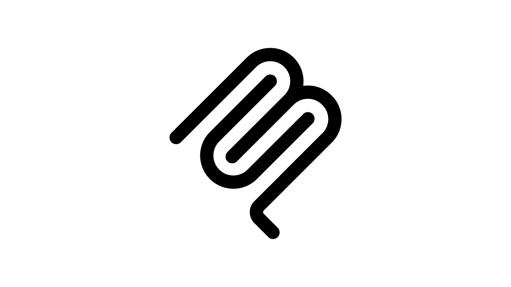

Model Context Protocol

AI applications are reasonably well known with applications like ChatGPT being most familiar, or AI assistants such as Microsoft Copilot along with other AI applications such as Claude. These AI applications can be connected to external system using an open-source standard, MCP or Model Context Protocol which enables AI applications to connect to data sources, this can be markdown files which are a format used throughout these types of applications or databases that can be used to store information for retrieval. MCP also can work with tools that do things from search engines to calculators and MCP can also perform tasks, to find out more about Model Context Protocol then visit modelcontextprotocol.io.
Model Context Protocol or MCP defines a universal standard for AI assistants and applications to plug into the outside world and talk to external systems with one standard interface for data or tools in a growing ecosystem of servers and clients that can be leveraged behind the scenes by developers to allow AI assistants and applications to connect to everything they need. MCP can allow AI assistants and applications to read or write files, access calendars or productivity applications, control applications, perform actions or run custom workflows or prompts.
Model Context Protocol is setup in three parts, first part of the setup for MCP is the host with is the AI application or assistant such as Claude, ChatGPT or Visual Studio Code using GitHub Copilot. The second part of the setup for MCP is the server which is a small application that exposes capabilities and responds to the host and the final part of the setup for MCP is the protocol itself, which is the shared language AI applications or assistants use to talk to each other.
Model Context Protocol, before Anthropic the creators of Claude AI assistant, developed it in 2024 every AI tool needed custom connectors for each system which was an unsustainable approach, MCP reused message flow ideas from Language Server Protocol, originally developed for Visual Studio Code, to standardise how AI tools access data, reduce integration complexity, breakdown information silos and create an ecosystem of MCP servers and clients.
Model Context Protocol enables developers to implement the servers that provide tools for the methods that AI applications or assistants to call, resources for structured data the AI can browse or templates for reusable prompt templates in any technology or platform they want. .NET supports an MCP server project template which includes example tools but can also provide access to resources including prompts to be used by an AI application or assistant.
Model Context Protocol can for example manage notes stored in a database, by exposing tools to create, update, delete, get or list them along with any additional functionality, where the behaviour and purpose of these tools is surfaced using simple descriptions. To create your own MCP Server in .NET to be used by GitHub Copilot in Visual Studio Code then visit tutorialr.com/workshops/dotnet-notes-mcp.